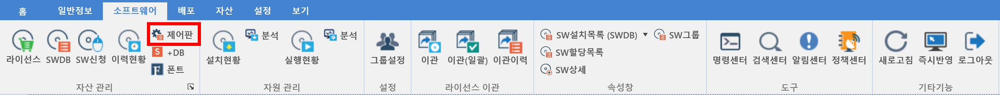
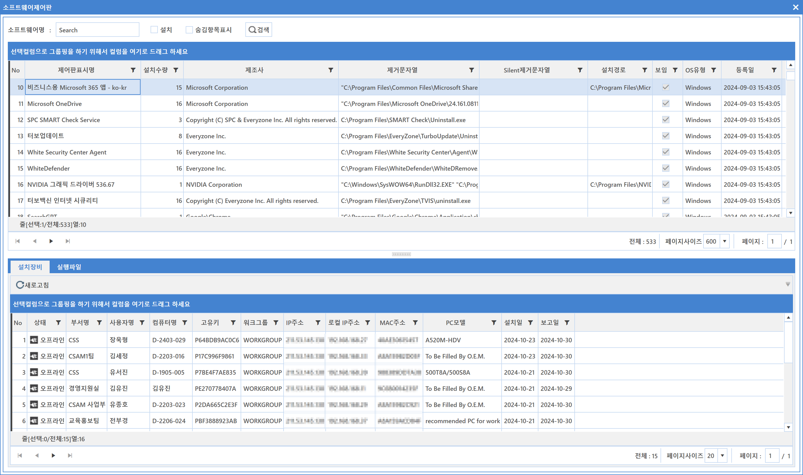
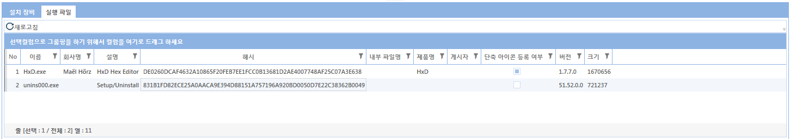
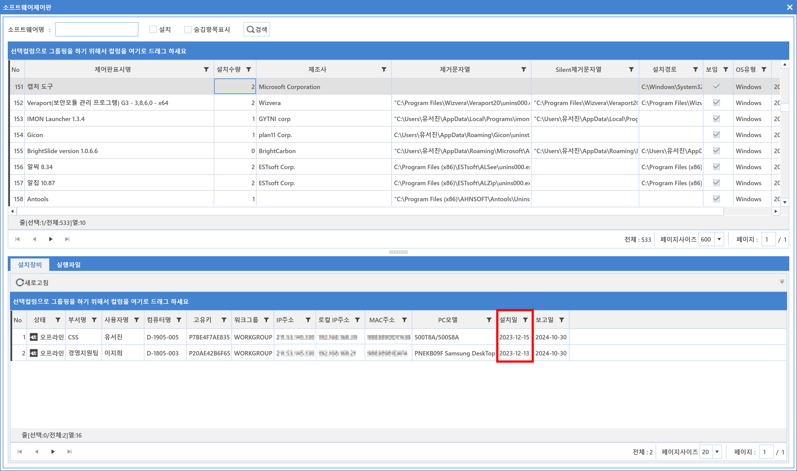

5-1-5. 제어판
5-1-5. 제어판
Source: https://www.sweeper.or.kr/etc/manual/515.html
5-1-5. 제어판


장비(Windows, Mac)에 설치된 소프트웨어 설치(제어판) 정보가 수집되며, 본 메뉴에서는 설치 소프트웨어의 상세정보 및 설치된 수량, 게시자, 제거문자열, 설치경로, 설치장비, 설치일 등 다양한 정보를 확인할 수 있습니다.

화면구성

설치장비 Tab
- 선택한 제어판 소프트웨어를 설치한 장비 리스트를 나타냅니다.

실행파일 Tab
- 선택한 제어판 소프트웨어의 주요 실행파일 정보를 나타냅니다.

참고사항
장비별 소프트웨어 설치일을 확인할 수 있습니다.

© Copyright SWeeper Inc.. All Rights Reserved